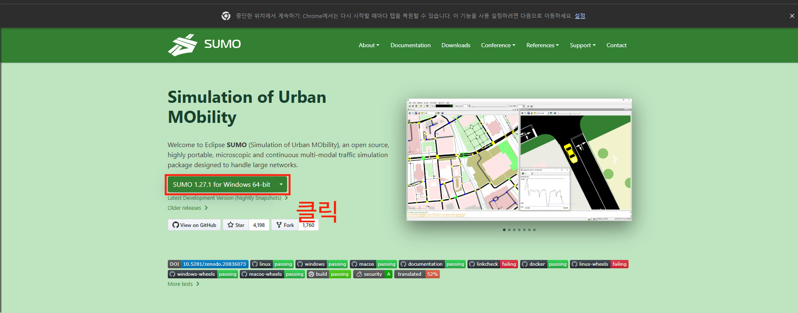
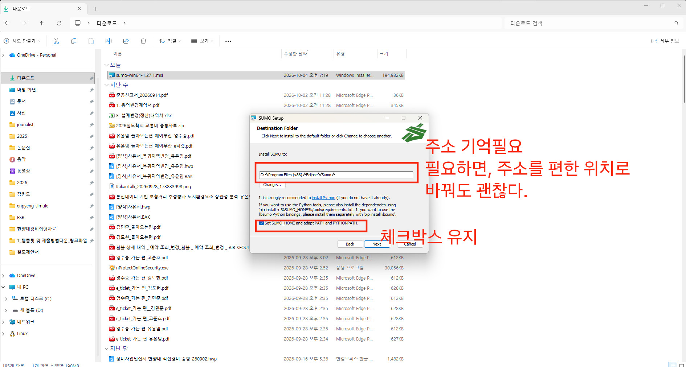
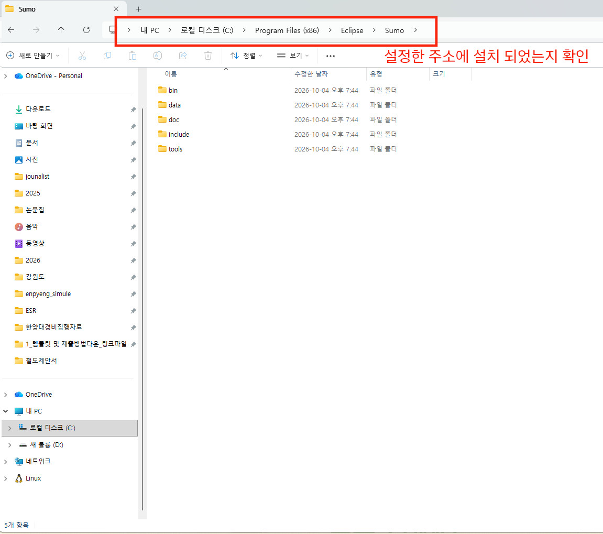
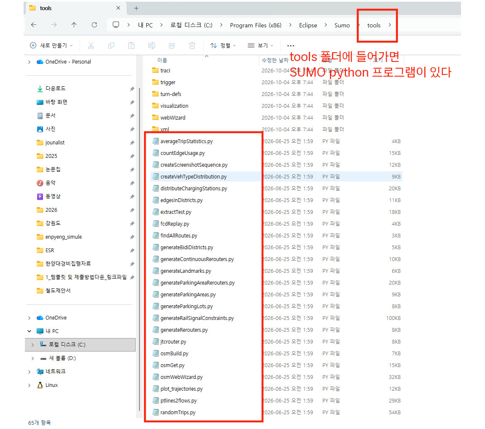
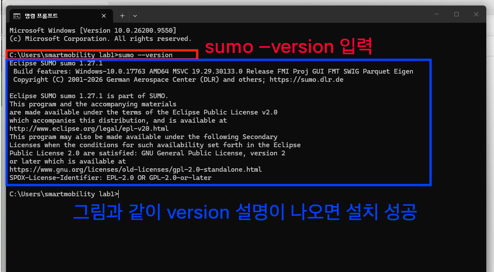
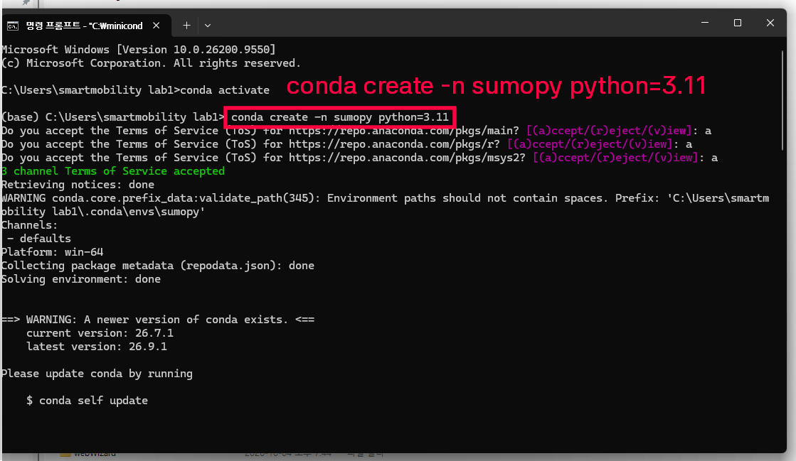
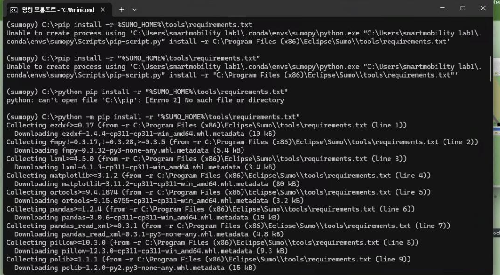
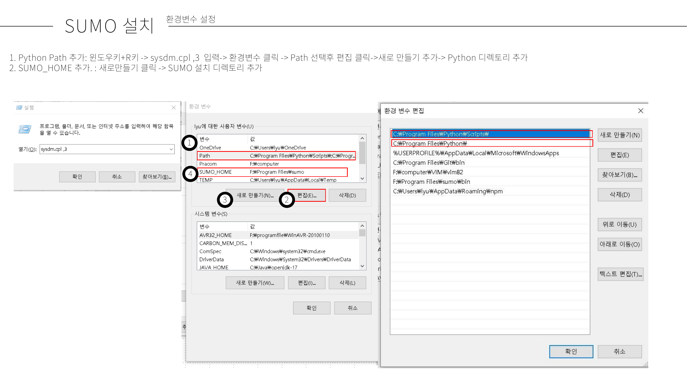

4 SUMO 설치 : 윈도우
SUMO 접속,
SUMO 1.27.1 for Windows 64-bit을 클릭하여 SUMO 설치 프로그램 다운로드
SUMO 설치 프로그램 클릭하여 설치 시작, SUMO 설치 주소는 디폴트 경로로 유지,
set SUMO_HOME and체크박스 선택
설정한 주소에 SUMO 폴더가 설치되어 있는지 확인
- 디폴트 경로대로 설치하였다면,
내 pc > 로컬디스크 C > Program Files (x86) > Eclipse > Sumo에 프로그램 폴더가 설치되어 있다.
- 디폴트 경로대로 설치하였다면,
tools 폴더 안에 SUMO python 프로그램이 있다. 각 프로그램별 기능은 SUMO document에서 검색해서 찾아볼 수 있다.

CMD 창을 켜서, SUMO가 잘 작동하는지 확인한다. 만약, 프로그램 폴더가 있지만, CMD에서 sumo가 작동하지 않는다면 환경변수 설정에서 오류가 생긴 것으로 아래 환경변수 설정을 따라하자.
명령어 입력
sumo --version
4.1 SUMO 콘다 파이썬 환경 설정하기
cmd 창 열기
sumo 전용 conda 환경을 만들기 위해 아래 명령어 입력
- 환경명 : sumopy
- 파이썬 버전 : 3.11
- 만약 파이썬 버전 3.11에서 sumo tool을 쓰는 데 문제가 생긴다면, 3.7버전의 새로운 환경을 만들어서 사용하시면 됩니다.
conda create -n sumopy python=3.11
- 명령어 입력하여 sumopy 활성화 하기
- 아래 명령어 입력 후, 나오는 다음 명령줄 앞에 (sumopy)가 나오면 환경이 정상적으로 생성된 것입니다.
conda activate sumopy - python 버전 확인하기
- 파이썬 버전이 나오면 환경에서 파이썬이 정상적으로 설치된 것입니다.
python --version - 아래 명령어를 입력하여, sumo python tools에 필요한 패키지 설치
python -m pip install -r "%SUMO_HOME%\tools\requirements.txt"
- sumopy를 활성화한 뒤에 sumo 관련 파이썬 코드를 사용하거나 관련 패키지를 설치하는 것이 좋습니다.
4.2 sumo 환경변수 설정
환경변수 설정은 아래의 두 명령어를 입력해서 반응이 없으면 수행합니다.
sumo --versionecho %SUMO_HOME%- sumo bin path를 환경변수로 설정해야합니다.
- SUMO Path 환경변수 설정하기
- 내가 설치한 SUMO 폴더를 찾는다
- SUMO 폴더에 들어간다
- bin폴더에 들어간다.
- 폴더 바탕에서 오른쪽 키를 클릭한다
- 속성을 클릭한다
- 보안탭에 들어간다
- 개체 이름을 복사한다.
- 복사한 값은 sumo bin 폴더의 path(주소)이다.
F:\Program Files\sumo\bin(자기 sumo>bin 폴더의 주소값)- 윈도우키>설정>시스템>정보>고급시스템 설정 >고급 Tab clik
- 환경변수 클릭
- Path 클릭
- 편집 클릭
- 새로만들기 클릭
- 복사한 주소값 넣기
- 적용
- cmd 켜기
- 작동확인
- 아래 그림에 나와있는대로 SUMO_HOME, Path에 sumo bin 구성되어 있는 지 확인
- 안되면 sumo 삭제 후, 디폴트 상태로 재설치(환경변수 추가에 Check하여 설치) or 메일로 문의
